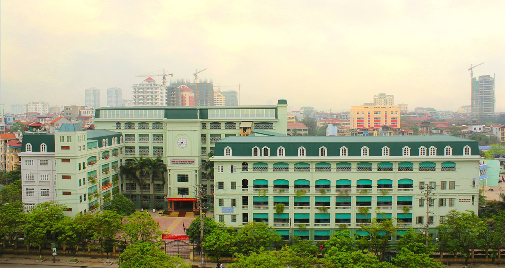

Giới Thiệu Về Trường THCS & THPT NGUYỄN BỈNH KIÊM - CẦU GIẤY - HÀ NỘI
Trường tọa lạc trên diện tích 7100m2 tại số 6 Trần Quốc Hoàn, phường Dịch Vọng Hậu, quận Cầu Giấy, Thành phố Hà Nội. Trường bao gồm 4 tòa nhà 7 và 9 tầng phục vụ cho hơn 3000 học sinh hằng ngày trong tuần.
Chủ tịch Hội đồng Quản Trị - Nhà sáng lập của trường là Tiến sĩ Nguyễn Văn Hòa, sinh ngày 04/01/1946.
Thầy đã có 14 năm phục vụ trong quân đội, 10 năm chiến đấu ở chiến trường miền Nam.
Thầy có 20 năm giảng dạy ở trường Cao Đẳng Sư Phạm Hà Nội(1966-1975), là chuyên gia về phương pháp dạy học,
có trên 22 năm làm công tác quản lí nhà trường từ cương vị hiệu phó đến Hiệu trưởng.
Ngoài ra, Hội đồng Quản trị còn có Nhà giáo Nguyễn Thu Hòa. Hiệu trưởng trường THCS&THPT là Nhà giáo Đàm Tiến Nam và
2 phó hiệu trưởng là nhà giáo Nguyễn Đức Hiếu và Hà Ngọc Thủy. Hiệu trưởng trường Tiểu học là thày Vũ Ngọc Phương cùng
hiệu phó là cô Nguyễn Thu Hà.
Chủ tịch Hội đồng Quản Trị - Nhà sáng lập của trường là Tiến sĩ Nguyễn Văn Hòa

Năm 2012 trường thực hiện xong dự án nâng cấp lên 7 tầng để xây dựng trường chất lượng cao với cơ sở vật chất hiện đại.
Ngày 11/10/2015, trường được UBND thành phố ra quyết định 6057/QĐ-UBND công nhận trường THPT chất lượng cao của thành phố.
Từ năm 2009, trường đã xây dựng Trung tâm giáo dục hướng nghiệp và lao động sản xuất tại xã Hương Sơn, huyện Bình Xuyên, Tp. Vĩnh Yên, tỉnh Vĩnh Phúc. Đến năm 2016, trung tâm chính thức đổi tên thành Trung tâm Trải nghiệm và Sáng tạo Vĩnh Yên – thuộc Hệ thống giáo dục Nguyễn Bỉnh Khiêm – Cầu Giấy. Trung tâm là nơi đón hơn 200 học sinh mỗi ngày lên hoạt động trải nghiệm với các môn học vô cùng thực tế và có tính thực hành cao như: chế tạo, pha chế, nấu ăn, giá trị sống, sinh học, sản xuất nông nghiệp, bơi lội, bóng đá, bóng rổ, cầu lông, bóng bàn và võ tự vệ.
Ngoài ra, không dừng lại ở đó, trường đã đầu tư và xây dựng thêm một trung tâm Trải nghiệm khác tại Đắc Sở, Hoài Đức, Hà Nội. Đây là nơi phục vụ các con học sinh tiểu học lên trải nghiệm và hoạt động sản xuất. Trung tâm Trải nghiệm Hoài Đức đặt mục tiêu phát triển theo hướng công viên trường học. Điểm đặc biệt đó chính là thực phẩm sạch từ 2 trung tâm này sẽ được cung cấp cho các con học sinh tại trường.